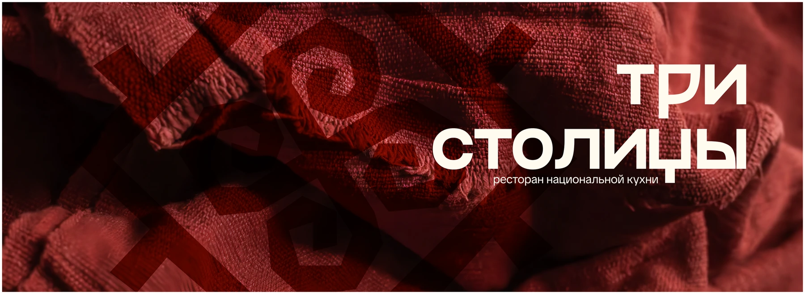
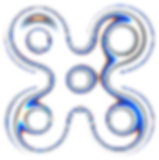

ссылки и стрелки
- Обычное
- Наведение
- Нажатие
Меняется цвет. Толщина стрелки и леттеринга сохраняется. Клавиатурный фокус отмечен синей рамкой 2 px.
Портфолио DK Style guide

Цвета, шрифты, сетка и компоненты портфолио для десктопа и телефона.
Нажми на образец, чтобы скопировать HEX.
DK
проекты
Дизайн и интерфейсы
| Уровень | Десктоп | Телефон |
|---|---|---|
| Заголовок секции | 32–66 px | 32–52 px |
| Подзаголовок | 17–30 px | 19,5 px |
| Основной текст | 11–15 px | 13 px, вводный 15 px |
Кириллица берётся из Wix Madefor Display, если в акцидентном шрифте нет нужных букв. Леттеринг Portfolio и Hello хранится в изображениях.
Меняется цвет. Толщина стрелки и леттеринга сохраняется. Клавиатурный фокус отмечен синей рамкой 2 px.
Первая кнопка открывает пример формы. В ней есть обязательное поле контакта и проверка заполнения.

три столицы
2023айдентика / гайдлайн / мерч
 Направление
Направление Навыки
Навыки
СофтВнутри каждого окна можно прокручивать страницу.